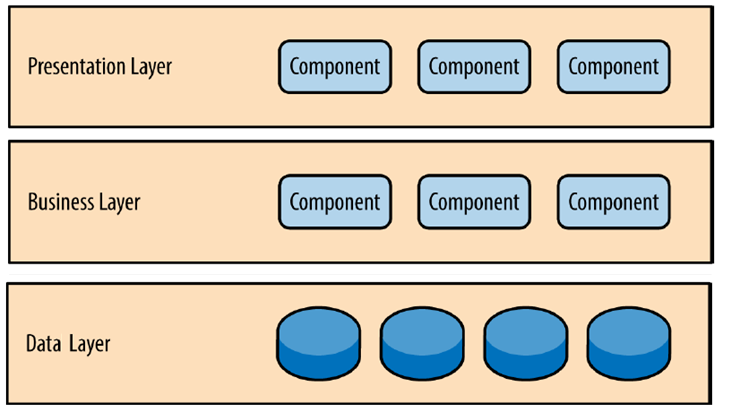
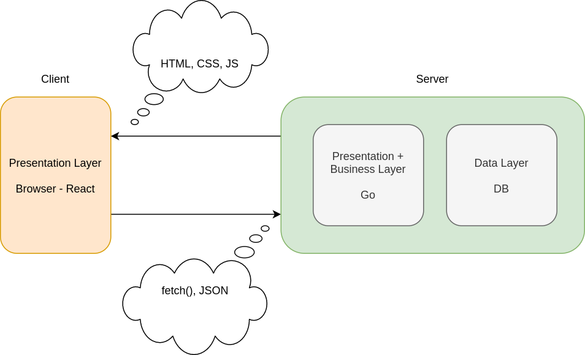
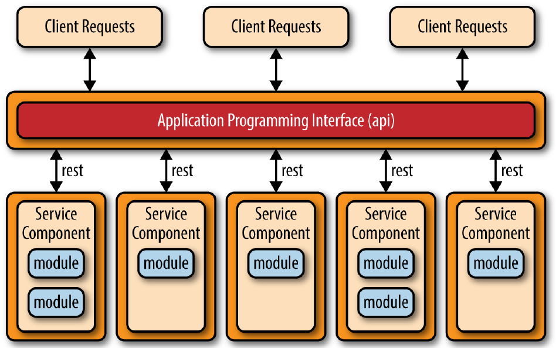

Web Application Development
- (Large) Applications cannot be developed in ad-hoc manner
- We need design & architecture (software engineering)
- Concept separation, Component, Relations, ...
- There are so many architectural patterns
- Common architectures in web applications
- MVC, MVVM, ...
- Multi-layer (Multi-tier), Microservices, ...
MVC: Model-View-Controller
- Model
- Does all the computational work
- It contains data and performs computation on it
- View (the user interface)
- Show the results from model or controller
- Controller (of states sequences)
- Handles events/requests affecting model or view
- User inputs/requests go to the controller
-
Available commands are determined by controller (based on model)
- Tells the model what to do
- Examples: MS Excel
MVC Interactions?!

MVVM Design Pattern
- What is the role of the controller in MVC?
- Basically updates V by changes in M and vice versa
- Instead of coding the C, make it automated
- Automatically update M by changes in V
- Automatically update V by changes in M
- Two-way binding
- The Model-View-ViewModel pattern
- The view model is a value converter
-
Responsible for exposing (converting) the data objects from the model
in such a way that objects are easily managed and presented.
The Patterns in Web Applications
- Example: MVC for whole (client + server)
- Model
- Database tables (persistent data)
- Session information (current stat data)
- Server-side processing
- View
- Controller
- Client-side scripting
- Part of processing by server side scripting
Layering Approach
- Common layering in web applications
- Presentation Layer
- Business logic Layer
- Data (management/resource) Layer
- These layers are purely abstractions
-
Not correspond to physical distribution
- All layers may or may not be on the same machine
-
Physical layering is referred as
multi-tier architecture
Multilayer Architecture

Presentation Layer
- User interface of the application
- Native (Windows Application, Android Application, etc.)
- Web-Based
-
Displays information (processing output) which are get from the business
logic layer
-
Gets user’s requests and pass them (with required data) to the business
logic layer
-
Note that the user interface of web applications can be made up client
side & server side codes
- What is this layer in Gmail?
Business Logic Layer
- The work that the application needs to do
- Receives requests from presentation layer
- Fetches required data from data layer
- Process the request & data
- Output is sent back to the presentation layer
- What does this layer do in Gmail?
Data Layer
- Provides data access interface to business logic
- Hide data storage details
- Hide heterogeneity of underlining systems
- Communicating with data store systems
- Database server
- Messaging system
- ...
- What is this layer in Gmail?
Traditional Multi-layer Web App

Modern Multi-layer Web App

Design Pattern in Modern Apps
-
Apply the design pattern in client side and server side
separately
- Client side frameworks
- Angular 1.x: MVC
- Angular 2.x: MVVM
- React: MVC
- Vue: MVVM
- Server side frameworks
Multi-layer Architecture Issues
- Scalability
- Business logic is monolithic
- How to scale it?
- Fault tolerance
- If a part of business logic is failed?
- Upgrade
- How to upgrade a modules of business logic?
Micro-Service Idea
-
Complex process can be divided into multiple
loosely-coupled components
- Each component
- Is autonomous
- Provides well-defined services
- Via Remote API call
- Distributed application
- Easy to scale
- Different technologies can be used
Microservices Architecture

The Four Tiers of a Microservice Application
-
Platform: A microservice platform provides tooling, infrastructure, and
high-level primitives to support the rapid development, operation, and
deployment of microservices.
-
Services: In this tier, the service that you build interact with each
other to provide business and technical capabilities, supported by the
underlying platform
-
Boundary: Clients will interact with your application through a defined
boundary that expose underlying functionality to meet the needs of outside
consumers.
-
Client: Client applications, such as websites and mobile applications,
interact with your microservice backend.
What Makes Microservices Challenging?
-
Scoping and identifying microservices requires
substantial domain knowledge.
-
The right boundaries and contracts between
services are difficult to identify and, once you've established them, can
be time-consuming to change.
-
Microservices are distributed systems and
therefore require different assumptions to be made about state,
consistency, and network reliability.
-
By distributing system components across networks, and increasing
technical heterogeneity, microservices introduce
new modes of failure.
-
It's more challenging to understand and verify what should happen in
normal operation.
Transactions?
- Where did you hear it?
- ACID Properties
- Atomicity
- Consistency
- Isolation
- Durability
Atomicity
- Transactions are often composed of multiple statements
-
Atomicity guarantees that each transaction is treated as a single
"unit", which either succeeds completely, or fails completely
-
if any of the statements constituting a transaction fails to complete,
the entire transaction fails and the system is left unchanged.
Consistency
-
Consistency ensures that a transaction can only bring the system from
one valid state to another
Isolation
- Transactions are often executed concurrently
-
Isolation ensures that concurrent execution of transactions leaves the
system in the same state that would have been obtained if the
transactions were executed sequentially.
Durability
-
Durability guarantees that once a transaction has been committed, it
will remain committed even in the case of a system failure (e.g., power
outage or crash).
A Real Story 🔥
- There was a micro-service architectured IoT Platform - 2018
-
Users can create project and each project must be created on API
gateway, X and Y services
-
Requests are handled by API gateway and then it call X and Y services to
create a new project
-
Sometimes X service failed to create project and sometimes Y service
isn't available to handle the request
- In each of these cases system goes into unrecoverable state
CAP Theorem
Impossible for a distributed data store to simultaneously provide more than
two out of the following three guarantees:
-
Consistency: Every read receives the most
recent write or an error
-
Availability: Every request receives a
(non-error) response, without the guarantee that it contains the most
recent write
-
Partition tolerance: The system continues to
operate despite an arbitrary number of messages being dropped (or delayed)
by the network between nodes
Asynchronous Messages
- More flexible
-
By announcing events, you make it easy
to extend the system to handle new requirements, because services no
longer need to have knowledge of their downstream consumers.
-
Asynchronous messaging typically requires a
communication broker
-
An independent system component that receives events and distributes
them to event consumers.